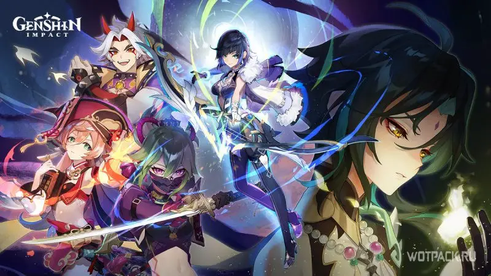

Основная информация.
«Genshin Impact» – приключенческая ролевая игра с открытым миром. Вам предстоит исследовать волшебный мир Тейват.
На этом огромном континенте вы посетите семь королевств, найдёте спутников с различными умениями и сразитесь с могущественными врагами в поисках пропавшего близкого человека.
А ещё можно просто странствовать безо всякой цели, разгадывая тайны наполненного жизнью мира.
В игре есть несколько основных элементов стихии такие как:
- Пиро
- Гидро
- Электро
- Крио
- Анемо
- Гео
- Были добавлены и доступны с релиза
- Дендро
- Был добавлен позже
Картинки, Сплеш-арты

Меню навигации по сайту:
Источники
Ссылки на сайты откуда была взята информация: